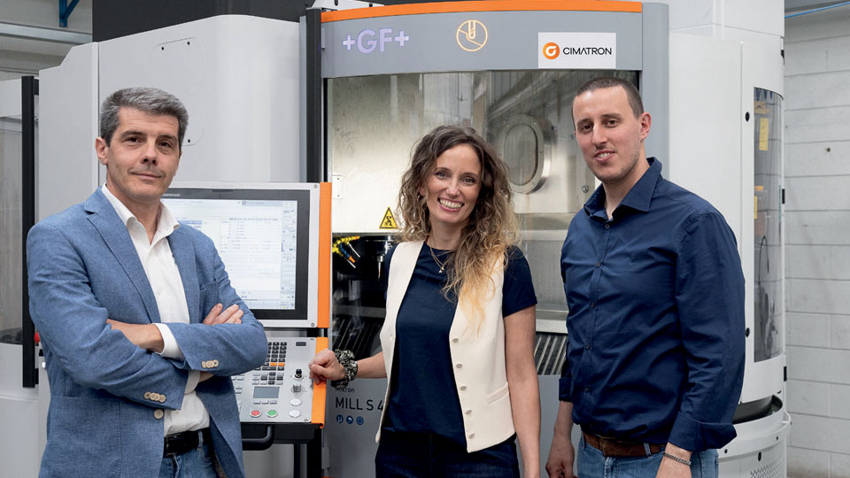
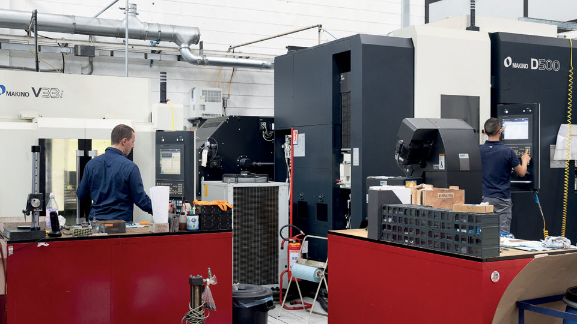
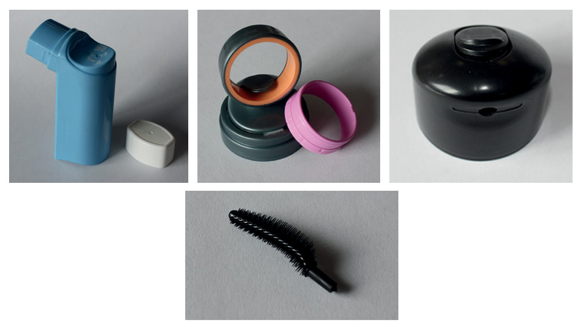
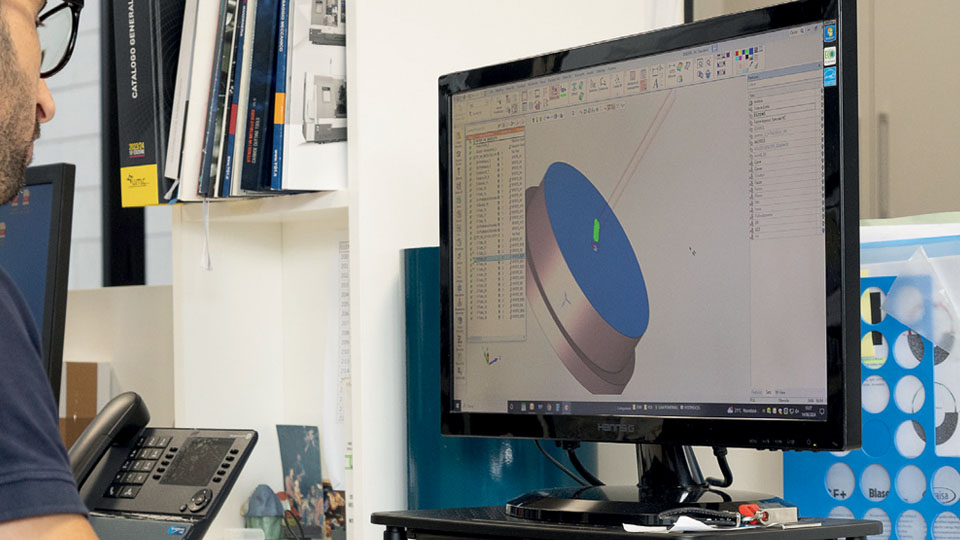
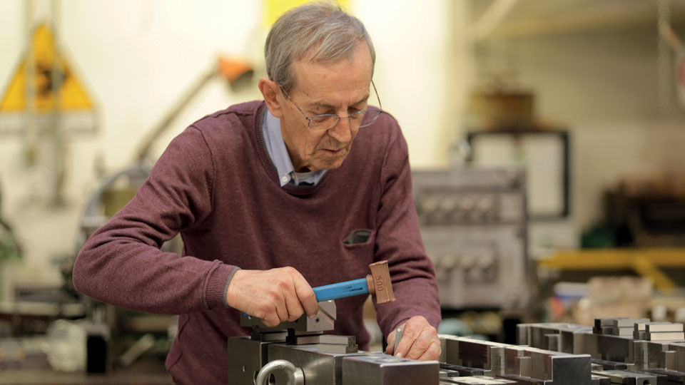
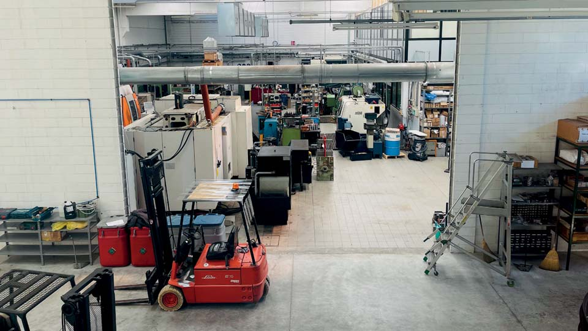
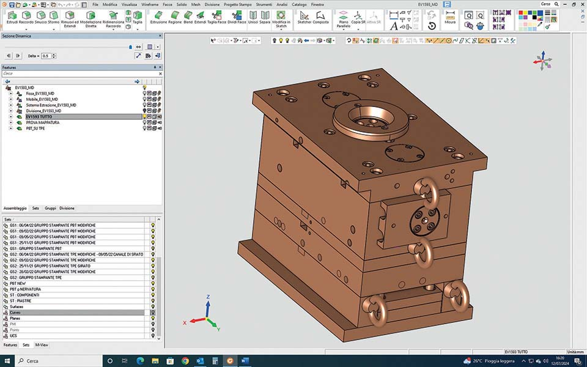
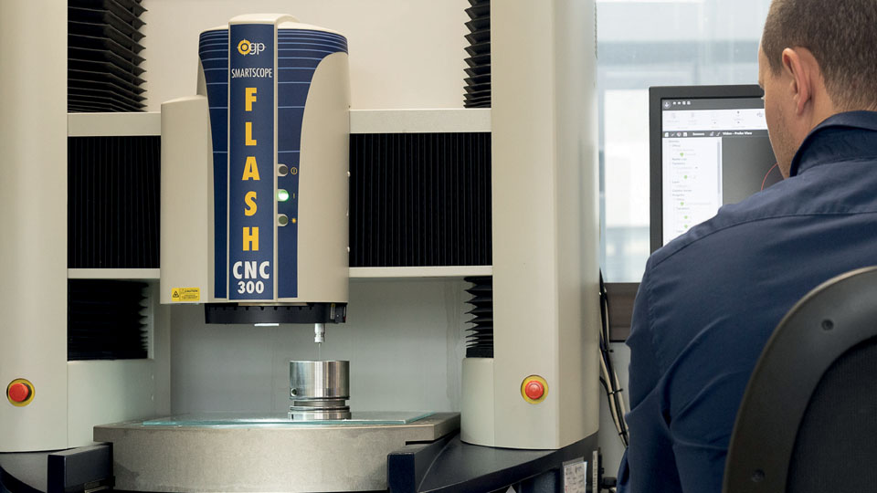
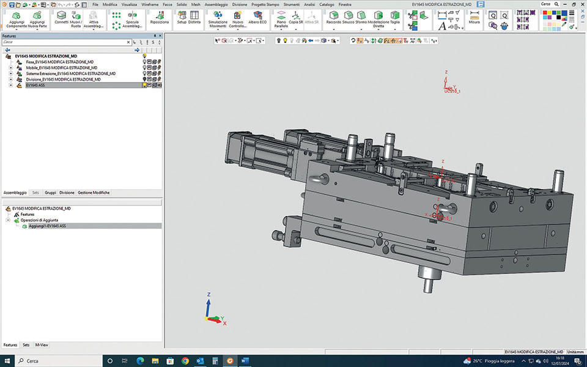

Everstampi est une entreprise familiale de 40 ans spécialisée dans la conception, la production et l'essai de moules complexes pour l'injection de matières plastiques. Elle utilise le système CAO/FAO Cimatron pour optimiser la conception et la production de ses moules, y compris l'usinage à 4 axes.
Répondre aux besoins des clients est une exigence pour toute entreprise, mais le spécialiste italien des moules Everstampi a prouvé pendant quatre décennies qu'il ne s'agissait pas d'une entreprise comme les autres.
"Notre succès est dû au fait que nous avons reconnu qu'un service client de qualité supérieure et l'innovation sont les seules stratégies commerciales qui valent la peine d'être poursuivies", a déclaré Meghann Colombo, gestionnaire de comptes chez Everstampi et fille du fondateur de l'entreprise. "Nous avons toujours investi dans la formation du personnel et dans les technologies des fournisseurs qui considèrent l'automatisation comme l'avenir de la fabrication de moules.
Everstampi a gagné en taille et en expertise après des années de collaboration avec ses clients pour perfectionner son savoir-faire en matière de conception, de production et d'essai de moules d'injection plastique, qui sont parmi les plus difficiles à produire.
L'intégration de technologies innovantes et l'accent mis sur le service à la clientèle ont permis à l'entreprise de s'imposer comme leader dans la fabrication de moules d'injection à canaux chauds et semi-chauds de grand volume, dont les cycles de production sont parmi les plus bas du marché.
"Nous répondons aux besoins complexes de nos clients avec clarté, transparence et précision à chaque étape", a déclaré M. Colombo.

Moules complexes de haute précision
Everstampi a été fondée en 1983 par Mario Colombo, un mouliste qualifié qui s'est lancé à son compte après avoir acquis de l'expérience dans plusieurs entreprises de fabrication de moules.
Aujourd'hui, l'entreprise est gérée par ses enfants, notamment Meghann, Jennifer, directrice financière, et Edoardo, directeur de la production, mais Mario est toujours présent dans l'atelier. En plus de 40 ans d'activité, Everstampi a construit plus de 700 moules et a la possibilité de créer des moules comportant jusqu'à 128 cavités.
Basée à Misinto, dans la province lombarde de Monza et Brianza, Everstampi construit des outils pour des multinationales italiennes et étrangères de premier plan dans de nombreux secteurs. Elle est spécialisée dans les moules complexes et de haute précision pour des produits tels que les actionneurs, les bouchons de pulvérisation et les pompes distributrices, ainsi que pour divers produits destinés aux secteurs pharmaceutique, cosmétique, de la consommation et de la technologie.
Everstampi a récemment construit un outil pour produire des brosses de mascara, un produit particulièrement complexe à mouler. Les poils en caoutchouc exceptionnellement fins de l'applicateur de mascara constituent un défi, car les cavités minuscules et précises doivent être créées pour répondre à des normes rigoureuses.

"Notre plus grande force réside dans le fait que nous réussissons à réaliser des projets extrêmement difficiles et complexes, ce qui nous distingue de la concurrence", a déclaré Edoardo Colombo. L'expérience acquise au fil des ans dans le cadre de projets complexes permet à l'entreprise de réaliser en toute confiance des opérations de micro-fraisage HSC avec des outils de 0,2 millimètre de diamètre, un processus difficile que peu d'entreprises en Italie sont en mesure d'exécuter. Quelle que soit la complexité d'un projet, l'entreprise garantit à ses clients qu'elle respectera trois principes fondamentaux : la précision, l'esthétique et la fonctionnalité.
"Atteindre la précision et l'esthétique souhaitée par le client pour la pièce finale est fondamental pour produire les moules dont il a besoin, et cela commence par des conceptions qui répondent à ces exigences concrètes", a déclaré Edoardo Colombo. "La fonctionnalité du moule est le résultat d'une détermination minutieuse de l'endroit et de la manière de placer les composants en réponse aux besoins d'injection, de remplissage, de refroidissement et d'extraction.

Production interne et contrôle de la qualité
Le département d'outillage d'Everstampi comprend six fraiseuses (3 et 5 axes), quatre machines EDM (deux à fil et deux en plongée), quatre tours, quatre rectifieuses et une perceuse capable d'effectuer des opérations sur des moules de dimensions maximales de 1 000 x 800 millimètres. La salle de métrologie de l'entreprise assure le contrôle dimensionnel des pièces et garantit que les travaux répondent aux exigences de qualité.
Ces capacités internes de production et de contrôle de la qualité rationalisent le flux de travail tout en garantissant que les processus critiques se déroulent sur place et sont exécutés par l'équipe d'Everstampi.
"Nous avons récemment agrandi l'espace dédié à la production avec un nouvel entrepôt où nous prévoyons d'utiliser des presses d'essai de moules pour les essais - ce qui était jusqu'à présent confié à une entreprise partenaire externe", a déclaré Meghann Colombo.
Un autre atout d'Everstampi est son service à la clientèle.
"Non seulement nous gérons la maintenance de nos moules, mais nous entretenons également les équipements fabriqués par d'autres fabricants de moules", explique Meghann Colombo. "En collaborant avec des petites entreprises ou de grands groupes multinationaux, nous parvenons toujours à créer une relation de confiance mutuelle".

Collaboration avec Cimatron
Chez Everstampi, le travail commence dans le bureau technique, où l'équipe de conception crée des modèles géométriques de moules complexes à partir de dessins ou de prototypes physiques.
Après avoir choisi une approche pour la construction des composants individuels des moules, le logiciel de fabrication assistée par ordinateur (FAO) génère les parcours d'outils à 3 et 5 axes nécessaires pour usiner ces composants avec des machines à commande numérique. Everstampi utilise le logiciel de CFAO Cimatron depuis environ deux ans pour optimiser la conception des moules et générer des parcours d'outils CNC.

"Auparavant, nous utilisions deux produits différents pour la conception des moules et la programmation FAO, et la gestion de systèmes totalement distincts nous prenait beaucoup de temps et d'énergie", explique Meghann Colombo. "Nous avons finalement décidé de regarder autour de nous et de voir ce que le marché avait d'autre à offrir.
Comme Everstampi était déjà en contact avec le directeur des ventes de Cimatron, Corrado Biggiogero, il lui a été proposé d'aider l'entreprise à résoudre l'un de ses plus grands défis : Les opérations d'usinage à 4 axes nécessitaient une intervention importante de l'opérateur FAO, ce qui augmentait le risque d'erreur, pour obtenir les résultats souhaités.

"Grâce à l'usinage 4 axes intégré de Cimatron, nous avons considérablement réduit les temps de programmation et d'usinage tout en diminuant la probabilité d'erreur", a déclaré Edoardo Colombo.
Compte tenu des avantages tirés de l'utilisation de Cimatron pour la programmation FAO, l'entreprise a étendu son utilisation aux capacités CAO du logiciel. "Grâce à Cimatron, nous pouvons désormais réaliser ce que nous avions l'habitude de faire avec trois produits différents avec un seul produit et une seule interface ; les gains d'efficacité sont évidents", a déclaré Edoardo Colombo.
Des délais d'exécution considérablement réduits
Cimatron CAD/CAM est un logiciel dédié à la conception et à la production de moules. Il a été développé dès le départ pour réduire considérablement les délais et aider les fabricants à optimiser toutes les machines à commande numérique, des machines à deux axes et demi aux centres d'usinage avancés. Il fournit des outils dédiés à chaque phase du développement et de la production de moules, de l'établissement du devis et de la conception à la gestion des composants des fournisseurs et à la fabrication.

L'intégration des capacités de CAO et de FAO est un avantage significatif pour les utilisateurs de Cimatron. Il est ainsi possible d'effectuer la conception de moules et la programmation CNC dans un environnement unique. Pour normaliser les processus et aider les entreprises à appliquer de manière cohérente les meilleures pratiques, le logiciel capture et stocke automatiquement les données du projet afin que les fabricants puissent utiliser les informations des travaux précédents pour de nouveaux projets sans avoir à tout recommencer.

Offrant des capacités idéales pour les fabricants de moules moins expérimentés, Cimatron comprend des connaissances intégrées qui prennent automatiquement des décisions sur les paramètres essentiels du travail. Grâce à sa flexibilité, les utilisateurs du logiciel peuvent toujours modifier les paramètres automatisés pour refléter leurs préférences.
Pour s'assurer que les tâches seront exécutées en toute sécurité lorsqu'elles seront envoyées à l'atelier, les moulistes utilisent les fonctions de simulation de coupe et de vérification du parcours d'outil de Cimatron pour s'assurer que les composants seront usinés avec un parcours d'outil sans collision. Cette capacité à vérifier la sécurité du travail permet de faire fonctionner les machines sans surveillance en toute confiance et d'augmenter la productivité.

Un logiciel et un service fiables
Everstampi utilise plusieurs modules logiciels avancés de Cimatron, pour des tâches spécifiques de conception de moules et pour réaliser en toute sécurité des opérations d'usinage 3 axes, 3 2 axes et 5 axes.
"Nous nous appuyons également sur Cimatron Viewer, une solution qui facilite le processus de vérification et garantit que toutes les personnes impliquées travaillent avec les mêmes données", a déclaré Edoardo Colombo. La direction d'Everstampi est satisfaite de la qualité du logiciel et du service après-vente fourni par Cimatron.
"Nous avons trouvé en Corrado Biggiogero un partenaire extrêmement compétent et professionnel qui répond immédiatement à nos besoins", a déclaré Meghann Colombo. "Un excellent dialogue s'est établi avec lui et son équipe d'assistance, ce qui est un avantage qui permet d'éviter de nombreux problèmes."